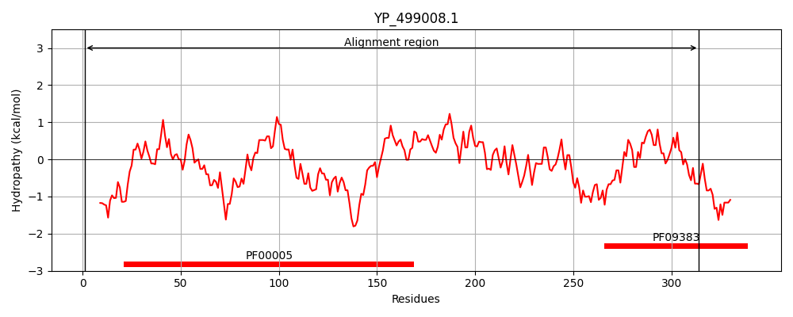
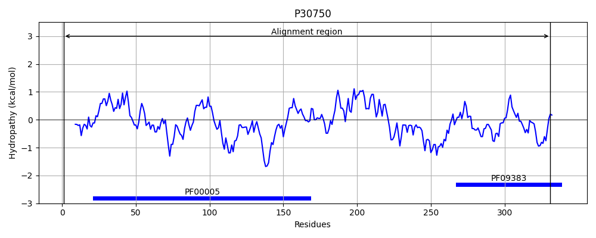
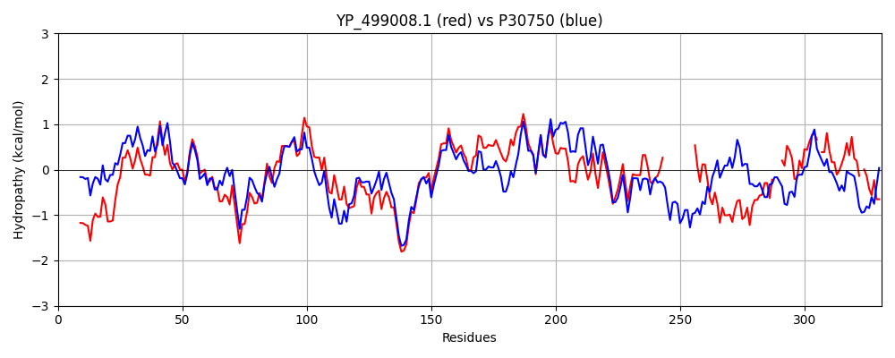

Hit Accession: P30750
Hit TCID: 3.A.1.24.1
Hit Description: gnl|BL_ORD_ID|9728 gnl|TC-DB|P30750|3.A.1.24.1 D-methionine transport ATP-binding protein MetN - Escherichia coli.
Mach Len: 331
e:0.000000
Query TMS Count : 0
Hit TMS Count: 0
TMS-Overlap Score: 0.000000
Predicted Substrates:CHEBI:6829;methionine
BLAST Alignment:
Score: 734 , Bit scores: 287 bits, E-value: 1.1e-95, Alignment length: 331, Percentage identity: 48
Query: 1 MIEFRQVSKTFNKKKQKIDALKDVSFTVNRNDIFGVIGYSGAGKSTLVRLVNHLEAASNGQVIVDGHDITNYSDKMMRDIKKDIGMIFQHFNLLNSATVFKNVAMPLILSKKSKTEIKQRVTEMLEFVGLSDKKDQFPDELSGGQKQRVAIARALVTNPKILLCDEATSALDPATTASILTLLKNVNQTFGITIMMITHEMRVIKDICNRVAVMEKGKVVETGTVKEVFSHPKTTIAQNFVSTV------------IQTEPSTSLIRRLNDEQVGDFKDYKIFVEETQ---VTQPIINDLIQICGR-EVKILFSSMSEIQGNT-VCYMWLR 314
MI+ ++K F++ + I AL +VS V I+GVIG SGAGKSTL+R VN LE + G V+VDG ++T S+ + ++ IGMIFQHFNLL+S TVF NVA+PL L K E+K+RVTE+L VGL DK D +P LSGGQKQRVAIARAL +NPK+LLCDEATSALDPATT SIL LLK++N+ G+TI++ITHEM V+K IC+ VAV+ G+++E TV EVFSHPKT +AQ F+ + +Q EP T + L E G D + E + V II+ + G + I+ + M Q +T WL+
Sbjct: 1 MIKLSNITKVFHQGTRTIQALNNVSLHVPAGQIYGVIGASGAGKSTLIRCVNLLERPTEGSVLVDGQELTTLSESELTKARRQIGMIFQHFNLLSSRTVFGNVALPLELDNTPKDEVKRRVTELLSLVGLGDKHDSYPSNLSGGQKQRVAIARALASNPKVLLCDEATSALDPATTRSILELLKDINRRLGLTILLITHEMDVVKRICDCVAVISNGELIEQDTVSEVFSHPKTPLAQKFIQSTLHLDIPEDYQERLQAEPFTDCVPMLRLEFTGQSVDAPLLSETARRFNVNNNIISAQMDYAGGVKFGIMLTEMHGTQQDTQAAIAWLQ 331 | Protein Hydropathy Plots: |
|---|
|  |  |
Pairwise Alignment-Hydropathy Plot:
|
|---|
|  |